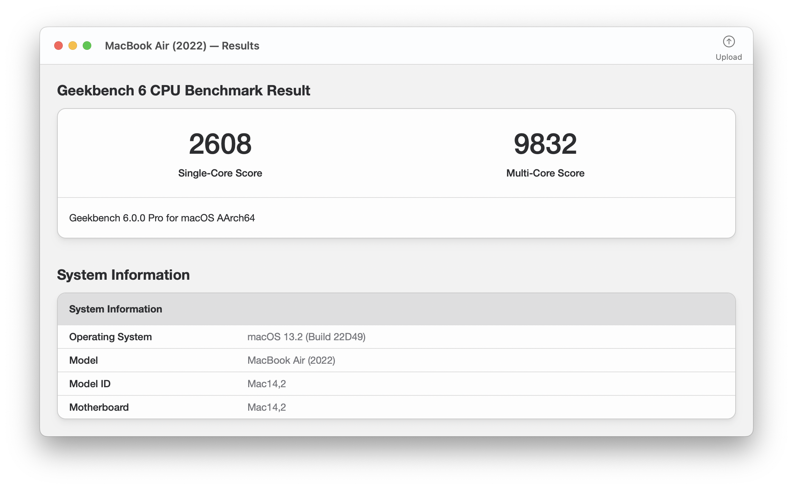

Geekbench6 完全上手指南：从跑分小白到看懂分数只需要五分钟
第一次听说 Geekbench6？这篇手把手带你从零开始认识这个跑分工具，五分钟跑通第一次测试，再告诉你分数怎么看、常见坑怎么绕，全程不需要任何电脑知识基础。
这篇能带你从完全不懂到用起来，不需要任何基础。
它到底是干嘛的——一个生活化类比讲明白
想象你在挑一台新笔记本，厂商说它"性能超强"，隔壁老王说他那台也"很快"，但你怎么知道到底谁更快？Geekbench6 就是一把标准化的尺子——把你的电脑或手机放到同一组任务里跑一遍，出来一个分数，大家用同一把尺子量，结果自然就能放到一张表里比。
它的geekbench6官网上有一张巨大的排行榜，全球用户跑完上传的成绩都在上面。你看中的型号，别人跑过的分数一查就有，比厂商自己的宣传靠谱多了。
简单说：Geekbench6 = 一台机器的"体能测试表"。
它测两大类：CPU 和 GPU Compute。CPU 那栏给两个分数——单核（单个大脑的反应速度，对应网页打开、界面点按这些日常操作）和多核（所有大脑一起干活的总速度，对应视频导出、代码编译这种能拆分的重活）。GPU Compute 测的是显卡当"并行计算器"的本事，不是游戏帧率——视频会议的背景虚化、AI 修图、3D 渲染都吃这一项。

五分钟上手——从下载安装到第一次跑通
别担心，整个过程真的五分钟够了。
第一步：下载。 去官方下载拿安装包（Windows 是 .exe，macOS 是 .dmg，Linux 有命令行版），安装方式跟你装 QQ、装 Office 一模一样，双击、下一步、完成，不需要任何配置。
第二步：打开。 桌面图标双击进去，你会看到一个非常简洁的界面——就是上面那张图那样，两个大按钮：Run CPU Benchmark 和 Run GPU Compute Benchmark。
第三步：点一下，等着。 先跑 CPU，整个过程大约两分钟。屏幕上会出现一堆进度条，跑完自动出结果。GPU 测试时间差不多，跑完会问你要不要上传成绩——上传了就能进全球排行榜，不上传也不影响本地看分。
就这三步。你现在可以停在这里去试了，回来再继续看。
上手后先玩这三个功能
跑完第一次，界面中间会显示你的分数。别急着关，先玩这三件事。
1. 去看看全球排行榜
跑完结果页右上角有个按钮可以直接跳到网站上的成绩库。Mac、Windows 桌面处理器、iOS、Android 各有一张实时排行。你会发现同一款芯片的不同型号分数差得挺明显——这就是为什么要看排行榜而不是只看厂商宣传。你把自己的分数输入进去，系统会帮你算一个"百分位"，比如"你的 CPU 比 72% 的同平台设备快"——这比一个孤立的数字有意义得多。
2. 点开子项分数看看自己的短板在哪
综合分是加权出来的，但子项分数才是真实能力表。Geekbench6 有 16 组 CPU 负载，挑几个代表说一下：
- 文件压缩：跟你解压文件、网盘备份的速度直接相关
- HTML5 浏览：单核跑这个——你日常刷网页流畅不流畅，就看这项
- Clang 编译：多核跑这个——如果你写代码，这项比综合分重要
- 背景虚化：就是视频会议每天在做的事，同时压 CPU 和内存
- 光线追踪：纯浮点密集型，跟 3D 渲染同源
子项分数表里你会看到每个小项目单独的得分，对照自己常做的事，哪个子项低就知道自己机器的短板在哪了。想知道这 16 组负载背后各自测的到底是什么算法、多大数据量，可以去翻翻geekbench6文档，上面有每组的详细拆解。

3. 跑两次看看温度影响
第一次跑完等机器凉个五分钟再跑一次，你会发现分数可能有差距——这就是温度墙的影响。笔记本尤其明显，散热不好的话 CPU 一热就自动降频，分数掉一大截。两次分数对比一下，心里对机器的散热能力就有数了。评测媒体为什么会跑三遍取均值？就是为了把这个温度波动的影响消掉。
小白的三个常见疑问
Q：GPU 测试列表是空的怎么办？
很多朋友打开 GPU 测试发现 OpenCL 或 Vulkan 一个都没有，以为软件坏了。别慌，90% 的情况是驱动没装好或太旧。Geekbench6 的 GPU 计算测试依赖显卡驱动里的运行时组件——系统自带的通用驱动通常不带这些。去显卡厂商官网（NVIDIA、AMD、Intel）下载最新的正式版驱动，装完重开软件就能看到了。还有一种情况是版本不支持某个 API，比如 Vulkan 在 Linux/ARM 上是 6.6 才加进去的，对照一下你手里的版本号。服务器用户（无显示器的无头环境）特别要注意：AMD 的无头 Vulkan 需要 2019 年 9 月之后的驱动版本才认。
Q：CPU 分数和游戏帧率是什么关系？
完全不是一回事。很多人以为 GPU Compute 分高 = 游戏画质高帧率稳，这是误解。Geekbench6 的 GPU 测试测的是通用并行算力——数学运算、AI 推理、图像处理的速度，它跟游戏的渲染管线、驱动优化走的是两条路。想知道游戏表现，去看 3DMark 或者直接实测游戏帧率；想知道视频导出、AI 修图、背景虚化这些，看 Geekbench6 就对了。两者分工明确，不要拿尺子去量体重。
Q：我的分数比同型号别人低，是不是买到假货了？
先别紧张。影响分数的变量太多了：室温高两度、笔记本没插电源、后台挂了一堆程序、驱动版本不同、甚至系统是 Windows 10 还是 11，都能让分数差个 5% 到 15%。正常范围，不用慌。真要较真的话，把后台全关、插好电源、室温控制在 22°C 左右再跑一遍，分数会好看很多。
写在最后
Geekbench6 上手其实真的没什么门槛——下载、点一下、等两分钟、看分。真正需要花时间的是"怎么解读"这一步，但那也不难，跟着上面三步走就够了。这篇覆盖了新手最常用的部分，如果你想深挖——比如命令行批量跑、长期追踪性能变化、或者对照更多子项负载理解硬件瓶颈，后面还有不少进阶玩法可以看。
总的来说，把它当成一把尺子就好，不要把分数当信仰。同一把尺子量自己的机器，知道它的能力边界在哪，够用就行。顺便提一句，这套资料在 GitHub、Gitee 和 GitCode 上都能拿到，挑你访问方便的那个就行。